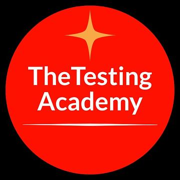

Verify the fix for the login button doing nothing after valid credentials are entered, and check nearby login behavior for regressions.
Status: Draft - pending human reviewJira type: BugJira status: IdeaJira priority: MediumPrepared: 18 November 2026

Review gate: This plan is based on the content of KAN-1. Confirm the open questions and target build/environment before execution. It is a draft and is not an approval to release.
Company Context
The supplied company notes describe work focused on A/B testing and website experimentation, identify VWO as a Bingify product, and report approximately 5,000 employees. This context is included as supplied background, not independently verified information.
The login button does not respond when valid credentials are entered
Issue type / status / priority
Bug / Idea / Medium
Environment in ticket
QA; Google Chrome; Windows 11
Reported behavior
After valid username and password are entered and Login is clicked, no action is triggered and the user remains on the login page.
Expected result
The user is successfully authenticated and redirected to the dashboard.
Impact stated in ticket
Users cannot access their accounts and are prevented from using the application.
The ticket describes an expected result but does not provide a separate, formally enumerated acceptance-criteria list.
1. Scope and Objectives
In scope
On the QA login page, submit valid credentials using the Login button.
Confirm that the action reaches the authentication flow, completes successfully, and routes the user to the dashboard.
Check the button and page response for invalid or missing credentials and for a failed authentication request.
Run the primary verification in Chrome on Windows 11, as stated in the ticket.
Check keyboard submission and repeat-submit behavior as adjacent login regressions, subject to the expected behavior being confirmed.
Out of scope unless confirmed
Other browsers, operating systems, mobile layouts, SSO, 2FA, password recovery, or registration.
Load, penetration, or broad security testing.
Changes to the dashboard or authentication policy beyond the redirect and successful access stated in KAN-1.
Objective: demonstrate that a valid login attempt is no longer a silent no-op and leads to authenticated dashboard access without breaking nearby login behavior.
2. Gaps and Questions for the Author
#
Area
Finding
Question
1
Environment
QA is named but no URL, build, or fix version is specified.
Which QA URL and build contain the fix?
2
Test account
The ticket says valid username/password but does not identify a provisioned test account.
Which approved QA account and access path should be used?
3
Authentication behavior
The expected dashboard destination is named generically.
What exact dashboard destination and post-login state should be verified?
4
Failure feedback
Expected behavior for invalid credentials and service/network errors is unspecified.
What error state and recovery action should the user see?
5
Button state
Loading, disabled, and repeated-click behavior are not described.
Should Login be disabled while a request is pending, and what feedback is expected?
6
Coverage
Only Chrome on Windows 11 is identified.
Are any additional browser/OS combinations required for this fix?
3. Test Scenarios
ID
Priority
Type
Scenario and expected result
Maps to
KAN1-TS-01
P0
Positive
Enter valid QA credentials and click Login once. The login action is handled, authentication succeeds, and the user reaches the dashboard instead of remaining idle on the login page.
KAN-1 expected result
KAN1-TS-02
P1
Positive / regression
Submit the same valid account using the supported keyboard action. Confirm it follows the same authentication and dashboard path as the button.
KAN-1; confirm keyboard behavior
KAN1-TS-03
P1
Negative
Enter an invalid credential pair and submit. Confirm no authenticated dashboard access is granted and a useful failure response appears; exact copy requires confirmation.
Gap 4
KAN1-TS-04
P1
Boundary
Submit with username missing, password missing, and both missing. Confirm the form does not silently do nothing and required-field behavior is clear.
Gap 4
KAN1-TS-05
P1
Negative / resilience
Submit valid credentials while the authentication service is unavailable or the request fails. Confirm the user receives feedback, remains unauthenticated, and can retry when the service recovers.
Gap 4; expected error behavior to confirm
KAN1-TS-06
P1
Regression
While a valid login request is pending, click Login repeatedly. Confirm the result is stable and no duplicate or conflicting authentication behavior occurs; expected pending-state UX requires confirmation.
Gap 5
KAN1-TS-07
P0
Environment regression
Repeat the primary valid-login scenario in the ticket's stated QA environment: Google Chrome on Windows 11.
KAN-1 test environment
P0/P1 are proposed QA risk priorities for review; the Jira issue itself is marked Medium. Record actual results and build identifiers during execution.
4. Test Data and Environment
Environment: QA; the URL and build number are TBD.
Browser / OS: Google Chrome on Windows 11, as specified by KAN-1.
Data: one authorized valid QA account; an invalid credential pair; and blank-field combinations. Obtain data from the QA owner.
Credential handling: use only approved synthetic or QA accounts. Do not place real passwords or tokens in this plan, screenshots, logs, or defect comments.
Dependencies: QA login page, authentication service, and an accessible test dashboard account.
5. Risks and Assumptions
Risk: the reported issue blocks all account access; failure of the primary scenario should block sign-off for this fix.
Assumption: the test account is authorized, active, and has access to the expected dashboard.
Assumption: “valid credentials” means an account accepted by the QA authentication service; account policy details are not in the ticket.
Limitation: no fix version, build, target URL, account, or additional browser matrix is provided.
Risk: success must be verified by authenticated dashboard access, not solely by a button animation or lack of an error.
6. Entry and Exit Criteria
Entry
Fix build and QA URL are confirmed and available.
Approved valid and invalid QA test data is provisioned.
Expected dashboard destination and error behavior are confirmed.
Smoke check confirms the login page is available in Chrome on Windows 11.
Exit
Both P0 scenarios pass on the agreed build and environment.
All planned scenarios are passed or explicitly recorded as blocked/not applicable.
No unresolved release-blocking defect remains for the login flow.
Results, build details, defects, and any accepted exceptions are recorded for reviewer approval.
7. Resource Allocation
Role
Responsibility
Owner
QA tester
Prepare authorized test data, execute scenarios, and record evidence/results.
TBD
Developer
Provide fix build details and support investigation of failures.
TBD
Product / QA reviewer
Confirm open behavior questions and approve this plan before execution.
TBD
8. Timeline and Sprint Details
No sprint, calendar dates, or fix version are present in KAN-1. Plan execution after the target QA build and access are confirmed.
Phase
Activity
Timing
Readiness
Confirm build, URL, account, and expected behavior.
TBD
Verification
Run P0 valid login first, then adjacent positive/negative regression scenarios.
TBD
Closure
Retest fixes, record results, and submit for review.
TBD
HUMAN REVIEW GATE
Assumptions: the ticket's expected result is the intended success behavior; QA has an authorized account and a test dashboard available.
Could not confirm: the fix build, QA URL, valid test account, exact error messages, pending-button behavior, or additional browser coverage.
Open questions: see Section 2; resolve these before treating the plan as approved.
Approval: QA/Product owner to approve or edit this draft before execution.